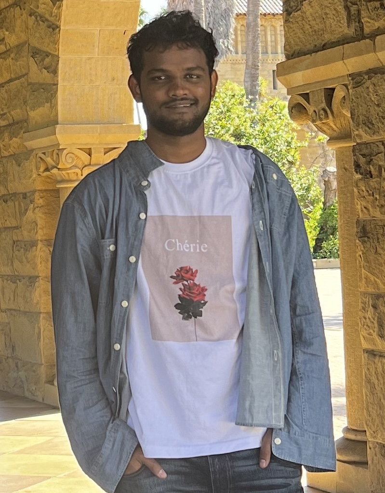

Mallikarjuna
Tupakula
AI Researcher · IFM, MBZUAI · Silicon Valley
Working on improving model capabilities on science and mathematics at the Institute of Foundation Models. MS student at RIT, researching AI Safety, Multimodal Learning, and NeuroAI.
I'm an independent researcher at the intersection of AI Safety, AI for Science, Multimodal Learning, and NeuroAI. Currently at IFM, MBZUAI in Sunnyvale and finishing my MS at RIT (full merit scholarship), where I work with Prof. Ashique KhudaBukhsh.
Previously nearly four years as a full-time researcher at the Indian School of Business with Prof. Sumeet Kumar, leading to publications at NeurIPS, ACL, ASONAM, and INFORMS JoC. Recipient of the Kathuria Pre-Doctoral Scholarship.
"Karmanye vadhikaraste ma phaleshu kadachana" — Bhagavad Gita

We investigate whether thin contrastive bridges — lightweight projection heads over frozen unimodal encoders — can align chemical and textual representations without full multimodal pretraining. Using ChEMBL mechanism pairs, we align ECFP4 fingerprints with biomedical sentence embeddings via dual linear projections. Scaffold-based evaluation shows non-trivial cross-modal alignment and strong within-target discrimination.
Quantifying the Academic Quality of Children's Videos Using Machine Comprehension
Gender Biases and Stereotyping in Children's Videos: 100 Popular YouTube Kids Channels
Do Vision Transformers and Convolutional Neural Networks Fit Together?
Started research internship at IFM, MBZUAI in Silicon Valley, working on improving model capabilities on science and mathematics.
Presented sole-author work at NeurIPS 2025 FM4LS Workshop in San Diego.